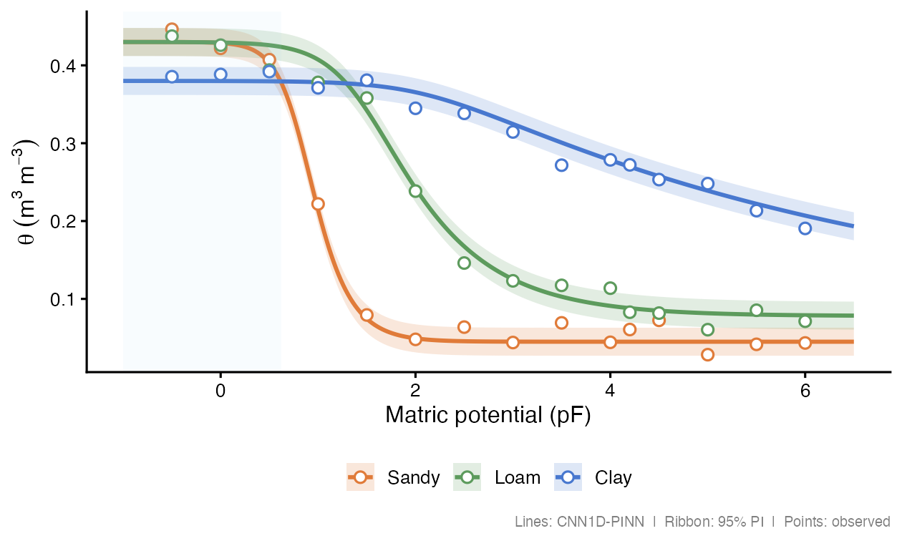
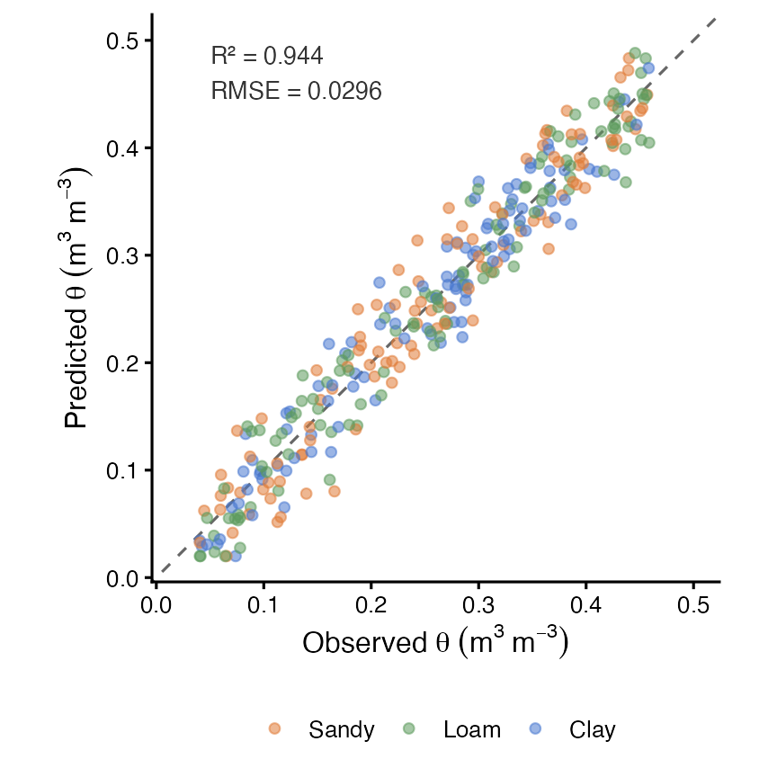

Physics-informed CNN1D for estimating the complete soil water retention curve (SWRC) as a continuous, monotone function of matric potential.

Overview
Classical pedotransfer functions (PTFs) predict volumetric water content (θ) at a handful of fixed pressure heads — field capacity (pF 2.0), wilting point (pF 4.2), etc. — leaving gaps between measurements and offering no guarantee of physical consistency.
soilFlux fills the entire curve. Given a soil sample described by texture fractions, organic carbon, bulk density, and depth, the model returns θ at any pF value in [−2, 7.6], with four physics constraints baked into the loss function and strict monotonicity guaranteed by architecture.
Why not Van Genuchten?
The Van Genuchten (1980) equation is the standard parametric SWRC model:
where h = matric potential (cm), θ_r = residual water content, θ_s = saturated water content, α = inverse air-entry pressure, and n = pore-size distribution index.
Fitting VG requires measured data at several pressure heads per sample and a nonlinear optimiser — and the parametric form can still violate monotonicity near the wet end. soilFlux replaces parameter fitting with a single forward pass through a trained neural network:
where is a Conv1D output and softplus > 0 everywhere, so the integral is strictly increasing and is strictly decreasing — monotonicity is a structural property, not a post-processing step.
| Van Genuchten | Norouzi et al. (MLP-PINN) | soilFlux (CNN1D-PINN) | |
|---|---|---|---|
| Inputs | Measured θ at ≥ 4 pressure heads | Texture, OC, BD, depth | Texture, OC, BD, depth |
| Outputs | θ at any h (after fitting) | θ at any pF (direct inference) | θ at any pF (direct inference) |
| Backbone | — | MLP | Conv1D |
| Monotonicity | Not guaranteed | ✅ By architecture | ✅ By architecture |
| Physics constraints | None | ✅ 4 residual constraints | ✅ 4 residual constraints (adapted) |
| New samples | Re-fit required | Single forward pass | Single forward pass |
| Uncertainty | Delta method / bootstrap | — | Prediction interval via ensemble |
Architecture
Norouzi et al. (2025) proposed their physics-informed approach using a multi-layer perceptron (MLP) as the backbone. soilFlux replaces the MLP with a one-dimensional convolutional network (Conv1D), treating the pF axis as an ordered sequence and letting the convolutional filters learn local curvature patterns along the retention curve.
|
The model takes a 3-D input tensor of shape The saturated water content θ_s is predicted separately from a shallow branch of the network and subtracted, so the curve anchors correctly at both the wet plateau (pF ≈ −2) and the oven-dry end (pF = 7.6). |
|
Loss function (adapted from Norouzi et al. 2025)
The loss function design — the wet/dry data split and all four physics residual constraints (S1–S4) — is adapted directly from Norouzi et al. (2025). The CNN1D backbone described above replaces their original MLP.
The total training loss combines a data term and four physics residual terms, each weighted by a tunable λ:
Data loss
The observed data are split at matric head = 4.2 cm (pF ≈ 0.62, near saturation) and weighted separately to balance the large dynamic range of the curve:
with λ₁ = 1, λ₂ = 10 — the dry end is up-weighted because observed values are close to zero and small absolute errors carry proportionally more weight.
Physics residuals
Collocation points {} are sampled from each constraint domain at each training step. Gradients are computed via automatic differentiation (TensorFlow GradientTape).
S1 — Linear dry end (domain: pF ∈ [5.0, 7.6], λ₃ = 1)
S2 — Non-negativity (domain: pF = 6.2, λ₄ = 1 000)
S3 — Non-positivity (domain: pF = 7.6, λ₅ = 1 000)
S4 — Saturated plateau (domain: pF ∈ [−2.0, −0.3], λ₆ = 1)
S1 enforces that the curve becomes a straight line at the dry end (orange region) — the most visible structural difference from Van Genuchten, which continues to curve smoothly all the way to the dry end (compare solid vs. dashed lines in the figure above). S2/S3 act as hard barriers that prevent the network from predicting negative or positive water content at the physical bounds. S4 penalises any slope in the saturated plateau (blue region).
The default weights are accessed via norouzi_lambdas("norouzi"); a smoother dry end uses norouzi_lambdas("smooth") (λ₃ = 10).
Performance

Typical performance on held-out test pedons across texture classes:
| Metric | Value |
|---|---|
| R² | ≥ 0.97 |
| RMSE | < 0.030 m³ m⁻³ |
| MAE | < 0.020 m³ m⁻³ |
| Bias | < 0.005 m³ m⁻³ |
Results vary with dataset size, texture distribution, and number of training epochs. See the package vignette for a reproducible workflow.
Installation
# Install from GitHub (development version)
remotes::install_github("HugoMachadoRodrigues/soilFlux")
# Install TensorFlow/Keras backend (once per machine)
tensorflow::install_tensorflow()System requirements: R ≥ 4.1, Python ≥ 3.8, TensorFlow ≥ 2.14, keras3.
Quick start
library(soilFlux)
# 1. Prepare data ──────────────────────────────────────────────────────────
data("swrc_example")
df <- prepare_swrc_data(swrc_example, depth_col = "depth")
ids <- unique(df$PEDON_ID)
set.seed(42)
tr_ids <- sample(ids, floor(0.70 * length(ids)))
val_ids <- sample(setdiff(ids, tr_ids), floor(0.15 * length(ids)))
te_ids <- setdiff(ids, c(tr_ids, val_ids))
train_df <- df[df$PEDON_ID %in% tr_ids, ]
val_df <- df[df$PEDON_ID %in% val_ids, ]
test_df <- df[df$PEDON_ID %in% te_ids, ]
# 2. Fit model ─────────────────────────────────────────────────────────────
fit <- fit_swrc(
train_df = train_df,
x_inputs = c("clay", "silt", "bd_gcm3", "soc", "Depth_num"),
val_df = val_df,
epochs = 80,
lambdas = norouzi_lambdas("norouzi"),
verbose = TRUE
)
# 3. Evaluate on test set ──────────────────────────────────────────────────
evaluate_swrc(fit, test_df)
#> # A tibble: 1 × 4
#> R2 RMSE MAE Bias
#> <dbl> <dbl> <dbl> <dbl>
#> 1 0.974 0.0241 0.0163 0.0012
# 4. Predict the full continuous curve ─────────────────────────────────────
dense <- predict_swrc_dense(fit, newdata = test_df, n_points = 500)
# 5. Plot ──────────────────────────────────────────────────────────────────
plot_swrc(dense, obs_points = test_df,
obs_col = "theta_n",
facet_row = "Depth_label",
facet_col = "Texture")Main functions
| Function | Purpose |
|---|---|
prepare_swrc_data() |
Standardise raw soil data for modelling |
fit_swrc() |
Train the CNN1D-PINN |
predict_swrc() |
Predict θ at specific pF / head values |
predict_swrc_dense() |
Predict full continuous SWRC curves |
predict_theta_s() |
Extract modelled saturated water content |
evaluate_swrc() |
R², RMSE, MAE, Bias on a test set |
swrc_metrics() |
Per-pedon regression metrics |
norouzi_lambdas() |
Default loss-weight configurations |
build_residual_sets() |
Physics collocation points |
save_swrc_model() / load_swrc_model()
|
Persist and reload trained models |
plot_swrc() |
Continuous SWRC curve figure |
plot_pred_obs() |
Predicted vs. observed scatter |
plot_swrc_metrics() |
Metric comparison bar chart |
plot_training_history() |
Training and validation loss curves |
classify_texture() / texture_triangle()
|
USDA texture classification |
Full reference: hugomachadorodrigues.github.io/soilFlux
Citation
If you use soilFlux, please cite:
Package:
Rodrigues, H. (2026). soilFlux: Physics-Informed Neural Networks for Soil Water Retention Curves. R package version 0.1.4. https://doi.org/10.5281/zenodo.18990856
Original architecture:
Norouzi, A. M., Feyereisen, G. W., Papanicolaou, A. N., & Wilson, C. G. (2025). Physics-Informed Neural Networks for Estimating a Continuous Form of the Soil Water Retention Curve. Journal of Hydrology.
citation("soilFlux")